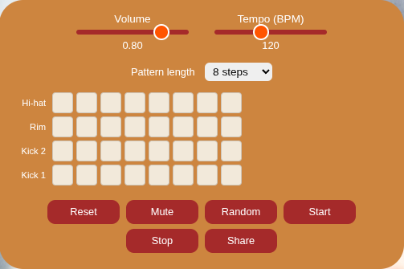

RhythmBrownBox — Version 2
Rebuild: August 2026.
Stack: ES modules · Vite · Vitest · Web Audio API · Web Worker. License: MPL-2.0. Runtime dependencies: none.
What it is
A ground-up rebuild of v1, driven by a code audit and an agile / BDD / TDD backlog. Same idea — a browser drum machine to practice against — but with real tempo, saved patterns, a working transport, keyboard and screen-reader access, and no third-party code.

What changed from v1
| v1 | v2 | |
|---|---|---|
| Tempo | "Interval-second" float, inverted | BPM 40–240, unit-tested conversion (tempo.js) |
| Pattern length | fixed 8 | 8 / 16 / 32 steps (pattern.js) |
| Tracks | 4 | 5 — hi-hat, rim, snare, kick 2, kick 1 |
| Persistence | none | autosave to localStorage + shareable URL (persistence.js) |
| Stop | empty function | real stop; Start resumes from step 0 |
| Scheduler | setInterval on the main thread, drifts |
pure stepsToFire() (scheduler.js) driven by a Web Worker timer — no background-tab drift |
| UI | NexusUI <canvas> widgets, mouse only |
native <input type="range"> + a real <button> grid; full keyboard + ARIA |
| Dependencies | NexusUI, Bootstrap, jQuery, Font Awesome… | none — ~6 KB of own JS |
| Tests / CI | none | 16 unit tests (Vitest); GitHub Actions runs lint + test + build |
How it's built
src/ES modules, bundled by Vite. The pure logic (scheduler,tempo,pattern,persistence) is split out and unit-tested with Vitest; DOM/audio behaviour is written up as Gherkin.featurefiles.- Two-clock scheduling (Chris Wilson, A Tale of Two Clocks): a coarse timer
in a Web Worker wakes periodically and schedules the next window of steps
onto the sample-accurate
AudioContextclock. A Worker timer isn't throttled when the tab is hidden, which is what fixes v1's drift. - Samples are
imported as assets and the worker is built?worker&inline, so the one source produces both a normal multi-filedist/and a single self-containeddist-single/index.html. - The saved-pattern format is versioned; adding the snare bumped it so older 4-row saves fall back to an empty grid instead of loading a row short.
Controls
Volume · Tempo (BPM) · Pattern length · the step grid (click, or Tab / arrow keys + Space) · Reset · Mute · Random · Start · Stop · Share.
About this copy
The single-file build — all JS, CSS, the Worker, five .wav samples and the
background inlined into one index.html that runs from file:// or any static
host, no build step.
Still open (candidates for v3)
A full roving-tabindex ARIA grid (today every cell is its own tab stop), swing, and per-track pattern lengths for polymeter. None of these block calling the rebuild done.